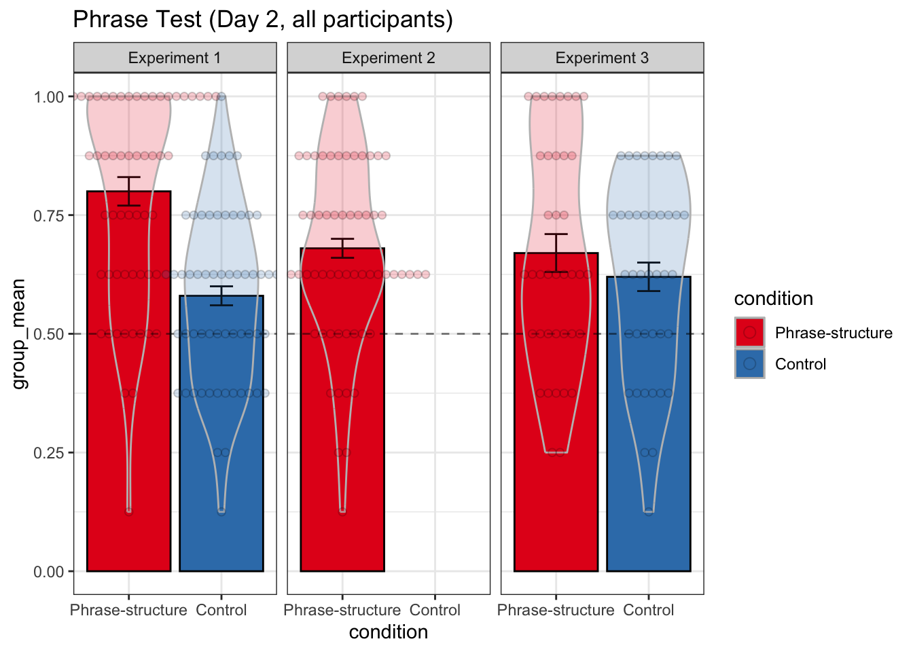
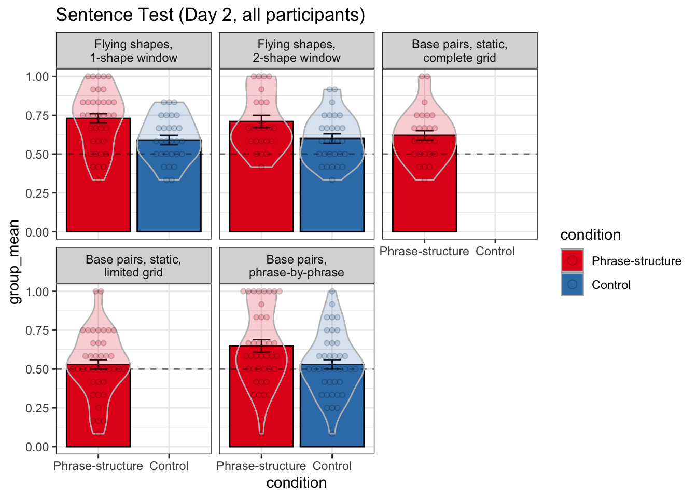
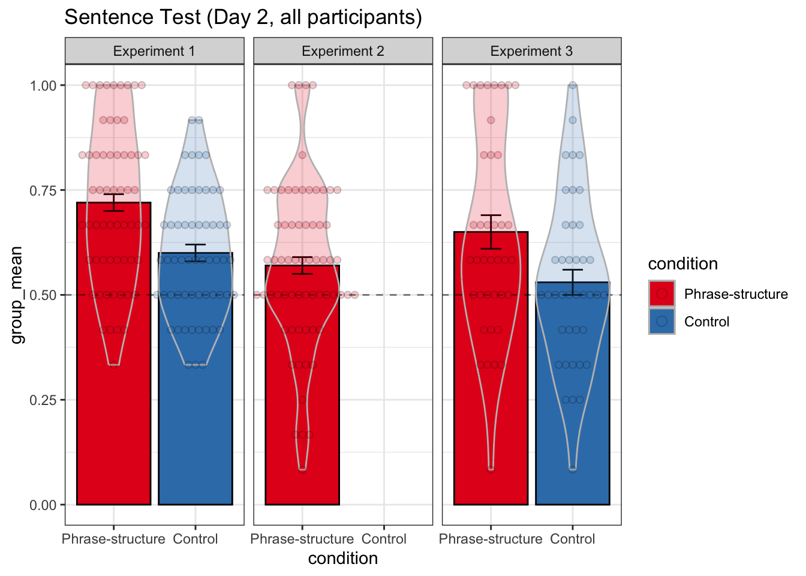
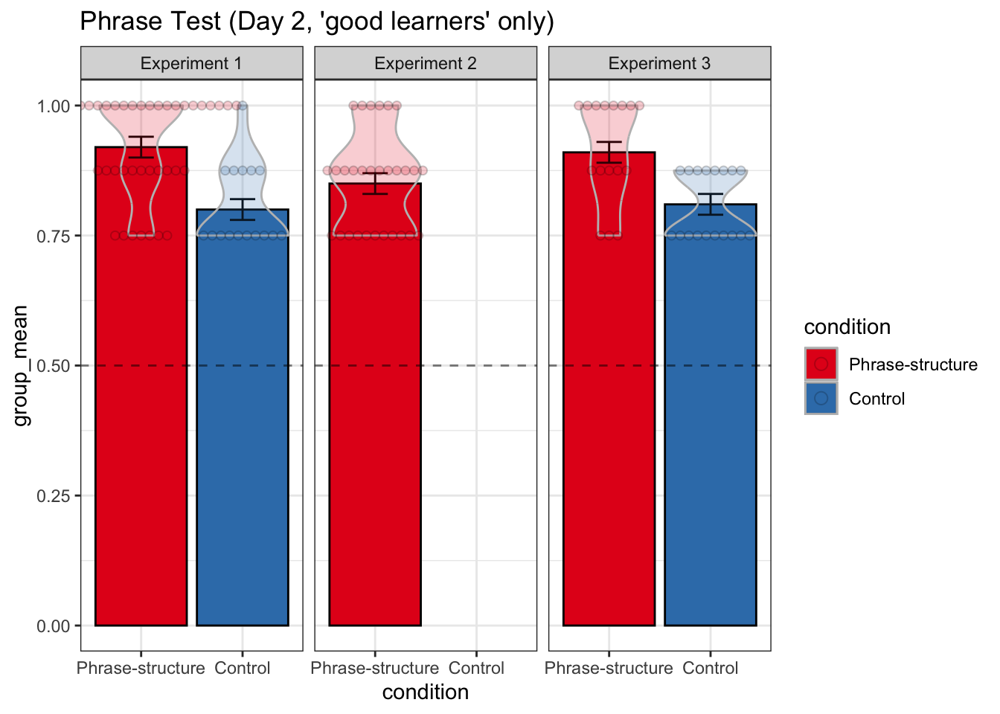
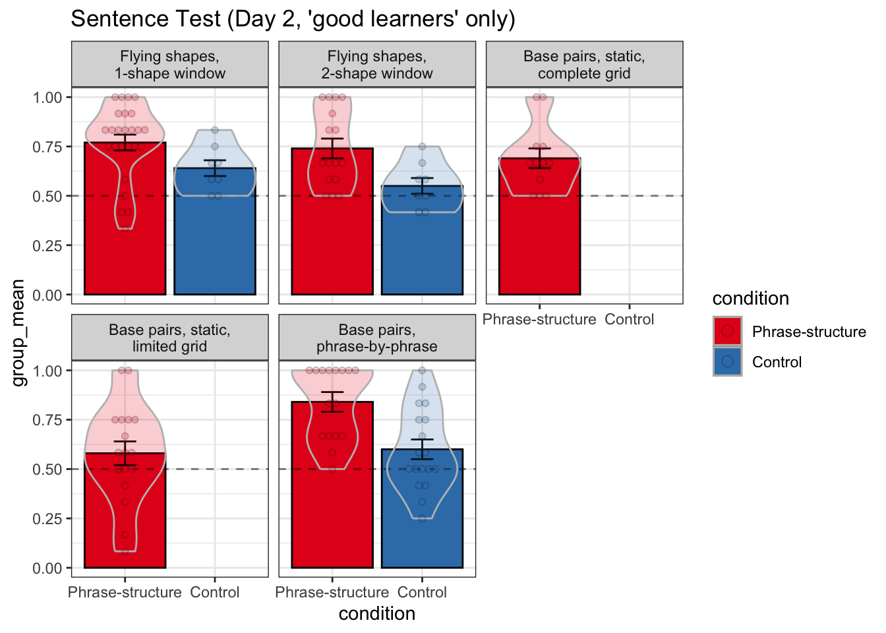
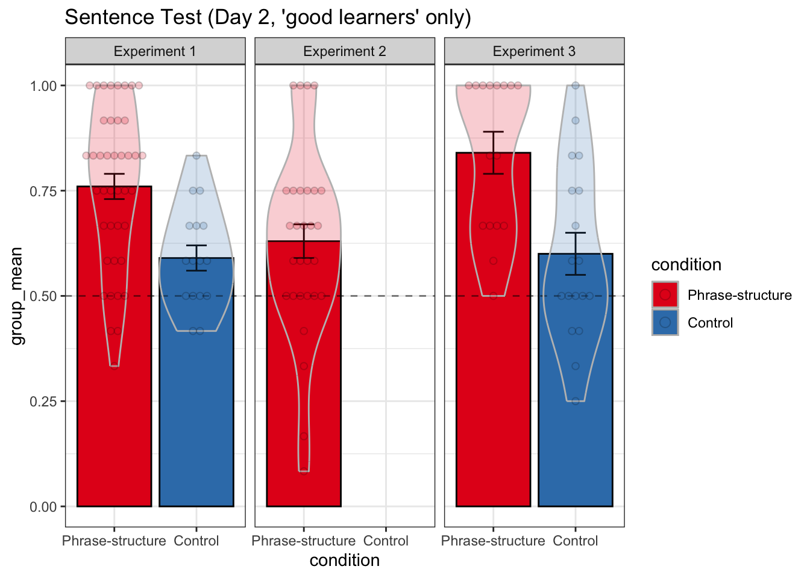

| experiment | name | versions | Phrase-structure | Control |
|---|---|---|---|---|
| Experiment 1 | Flying shapes, 1-shape window | v1 | 37 | 30 |
| Experiment 1 | Flying shapes, 2-shape window | v4 | 24 | 29 |
| Experiment 2 | Base pairs, static, complete grid | v12, v13 | 26 | 0 |
| Experiment 2 | Base pairs, static, limited grid | v20 | 40 | 0 |
| Experiment 3 | Base pairs, phrase-by-phrase | v18 | 39 | 40 |
visual-phrase-structure
Overview
Here are our notes:
- Summary of experiments we will publish
- All experiments
Ns by experiment
Here are the experiments we’re going to publish, with Ns. A few Ns are different. from what’s in our summary sheets because I discovered that a couple of participants were run in multiple experiments. I removed data for all but the first experiment they participated in.
Results: All learners
| name | condition | session | test | group_mean | n | sd | se |
|---|---|---|---|---|---|---|---|
| Flying shapes, 1-shape window | Phrase-structure | 1 | phrase | 0.73 | 37 | 0.20 | 0.03 |
| Flying shapes, 1-shape window | Phrase-structure | 2 | phrase | 0.79 | 37 | 0.23 | 0.04 |
| Flying shapes, 1-shape window | Phrase-structure | 2 | sentence | 0.73 | 37 | 0.19 | 0.03 |
| Flying shapes, 1-shape window | Control | 1 | phrase | 0.55 | 29 | 0.16 | 0.03 |
| Flying shapes, 1-shape window | Control | 2 | phrase | 0.56 | 29 | 0.21 | 0.04 |
| Flying shapes, 1-shape window | Control | 2 | sentence | 0.59 | 29 | 0.14 | 0.03 |
| Flying shapes, 2-shape window | Phrase-structure | 1 | phrase | 0.76 | 23 | 0.22 | 0.05 |
| Flying shapes, 2-shape window | Phrase-structure | 2 | phrase | 0.80 | 23 | 0.19 | 0.04 |
| Flying shapes, 2-shape window | Phrase-structure | 2 | sentence | 0.71 | 23 | 0.18 | 0.04 |
| Flying shapes, 2-shape window | Control | 1 | phrase | 0.50 | 29 | 0.21 | 0.04 |
| Flying shapes, 2-shape window | Control | 2 | phrase | 0.59 | 29 | 0.15 | 0.03 |
| Flying shapes, 2-shape window | Control | 2 | sentence | 0.60 | 29 | 0.15 | 0.03 |
| Base pairs, static, complete grid | Phrase-structure | 2 | phrase | 0.70 | 26 | 0.21 | 0.04 |
| Base pairs, static, complete grid | Phrase-structure | 2 | sentence | 0.62 | 26 | 0.17 | 0.03 |
| Base pairs, static, limited grid | Phrase-structure | 2 | phrase | 0.66 | 40 | 0.19 | 0.03 |
| Base pairs, static, limited grid | Phrase-structure | 2 | sentence | 0.53 | 40 | 0.21 | 0.03 |
| Base pairs, phrase-by-phrase | Phrase-structure | 2 | phrase | 0.67 | 39 | 0.24 | 0.04 |
| Base pairs, phrase-by-phrase | Phrase-structure | 2 | sentence | 0.65 | 39 | 0.24 | 0.04 |
| Base pairs, phrase-by-phrase | Control | 2 | phrase | 0.62 | 40 | 0.21 | 0.03 |
| Base pairs, phrase-by-phrase | Control | 2 | sentence | 0.53 | 40 | 0.20 | 0.03 |
| experiment | condition | session | test | group_mean | n | sd | se |
|---|---|---|---|---|---|---|---|
| Experiment 1 | Phrase-structure | 1 | phrase | 0.74 | 60 | 0.21 | 0.03 |
| Experiment 1 | Phrase-structure | 2 | phrase | 0.80 | 60 | 0.22 | 0.03 |
| Experiment 1 | Phrase-structure | 2 | sentence | 0.72 | 60 | 0.19 | 0.02 |
| Experiment 1 | Control | 1 | phrase | 0.53 | 58 | 0.18 | 0.02 |
| Experiment 1 | Control | 2 | phrase | 0.58 | 58 | 0.18 | 0.02 |
| Experiment 1 | Control | 2 | sentence | 0.60 | 58 | 0.15 | 0.02 |
| Experiment 2 | Phrase-structure | 2 | phrase | 0.68 | 66 | 0.20 | 0.02 |
| Experiment 2 | Phrase-structure | 2 | sentence | 0.57 | 66 | 0.20 | 0.02 |
| Experiment 3 | Phrase-structure | 2 | phrase | 0.67 | 39 | 0.24 | 0.04 |
| Experiment 3 | Phrase-structure | 2 | sentence | 0.65 | 39 | 0.24 | 0.04 |
| Experiment 3 | Control | 2 | phrase | 0.62 | 40 | 0.21 | 0.03 |
| Experiment 3 | Control | 2 | sentence | 0.53 | 40 | 0.20 | 0.03 |
Phrase Test
By version

By experiment

Sentence Test
By version

By experiment

Results: Good learners
Defining “good learners”
Throughout the project, we’ve looked at results for everyone combined and also only for “good learners”, defined as people who surpassed a certain threshold on the phrase test. We thought this was necessary because we didn’t always have an attention check built into the paradigm.
Here, I’ve defined the threshold for “good learners” as a score of ≥ 0.75 on the phrase test.
| name | condition | versions | good | not_good | good_proportion |
|---|---|---|---|---|---|
| Flying shapes, 1-shape window | Phrase-structure | v1 | 25 | 12 | 0.6756757 |
| Flying shapes, 1-shape window | Control | v1 | 8 | 22 | 0.2666667 |
| Flying shapes, 2-shape window | Phrase-structure | v4 | 17 | 7 | 0.7083333 |
| Flying shapes, 2-shape window | Control | v4 | 8 | 21 | 0.2758621 |
| Base pairs, static, complete grid | Phrase-structure | v12, v13 | 12 | 14 | 0.4615385 |
| Base pairs, static, limited grid | Phrase-structure | v20 | 17 | 23 | 0.4250000 |
| Base pairs, phrase-by-phrase | Phrase-structure | v18 | 16 | 23 | 0.4102564 |
| Base pairs, phrase-by-phrase | Control | v18 | 18 | 22 | 0.4500000 |
# A tibble: 40 × 10
# Groups: paradigm, name, condition, session, test [20]
paradigm name condition session test phrase_learning group_mean n sd
<fct> <ord> <ord> <fct> <fct> <chr> <dbl> <int> <dbl>
1 A Flyi… Phrase-s… 1 phra… good 0.79 25 0.18
2 A Flyi… Phrase-s… 1 phra… not_good 0.6 12 0.19
3 A Flyi… Phrase-s… 2 phra… good 0.94 25 0.07
4 A Flyi… Phrase-s… 2 phra… not_good 0.49 12 0.15
5 A Flyi… Phrase-s… 2 sent… good 0.77 25 0.19
6 A Flyi… Phrase-s… 2 sent… not_good 0.63 12 0.15
7 A Flyi… Control 1 phra… good 0.58 8 0.16
8 A Flyi… Control 1 phra… not_good 0.54 21 0.16
9 A Flyi… Control 2 phra… good 0.83 8 0.06
10 A Flyi… Control 2 phra… not_good 0.46 21 0.15
# ℹ 30 more rows
# ℹ 1 more variable: se <dbl># A tibble: 24 × 9
# Groups: experiment, condition, session, test [12]
experiment condition session test phrase_learning group_mean n sd
<fct> <ord> <fct> <fct> <chr> <dbl> <int> <dbl>
1 Experiment 1 Phrase-str… 1 phra… good 0.81 41 0.18
2 Experiment 1 Phrase-str… 1 phra… not_good 0.59 19 0.19
3 Experiment 1 Phrase-str… 2 phra… good 0.92 41 0.1
4 Experiment 1 Phrase-str… 2 phra… not_good 0.52 19 0.13
5 Experiment 1 Phrase-str… 2 sent… good 0.76 41 0.19
6 Experiment 1 Phrase-str… 2 sent… not_good 0.62 19 0.14
7 Experiment 1 Control 1 phra… good 0.6 16 0.15
8 Experiment 1 Control 1 phra… not_good 0.5 42 0.19
9 Experiment 1 Control 2 phra… good 0.8 16 0.08
10 Experiment 1 Control 2 phra… not_good 0.49 42 0.13
# ℹ 14 more rows
# ℹ 1 more variable: se <dbl>Phrase Test
Phrase test performance is what we filtered by, so of course it’s good. I’m just including these results for completeness.
By version

By experiment

Sentence Test

